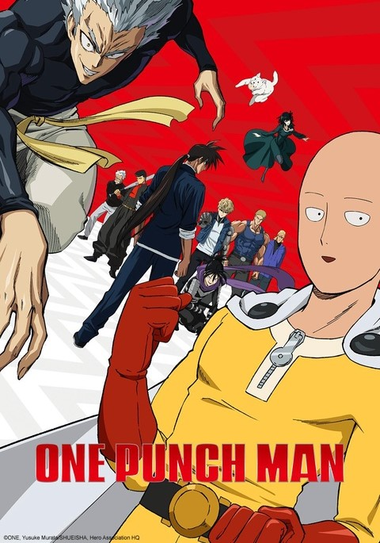
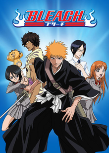

"Naruto" is a Japanese manga and anime series created by Masashi
Kishimoto. The story follows Naruto Uzumaki, a young ninja with dreams
of becoming the strongest ninja and earning the title of Hokage, the
leader of his village, the Hidden Leaf Village (Konohagakure). The
series is set in a fictional world where ninja villages exist, and
individuals train in the art of ninjutsu and other techniques. Naruto is
an orphan who grew up facing prejudice and loneliness because he is the
host of the Nine-Tailed Fox, a powerful and malevolent creature that
attacked the village years before. Despite the challenges, Naruto is
determined to prove himself and gain the acceptance of his fellow
villagers. As the story progresses, Naruto goes through various
missions, battles, and challenges alongside his friends and fellow
ninjas, such as Sasuke Uchiha and Sakura Haruno. The series explores
themes of friendship, perseverance, and the pursuit of one's dreams.
Additionally, it delves into the complexities of ninja politics,
conflicts between villages, and the mysteries surrounding Naruto's own
origins. The sequel to "Naruto" is "Boruto: Naruto Next Generations,"
which follows Naruto's son, Boruto Uzumaki, and his adventures as a
ninja.
One Punch Man

"One Punch Man" is a Japanese superhero anime and manga series created
by the artist ONE. The story follows Saitama, an unremarkable man who
becomes a hero just for fun. However, Saitama is no ordinary hero—he
possesses overwhelming strength and can defeat any opponent with a
single punch. As a result, he becomes bored with the lack of challenge
in his battles. The series explores themes of heroism, the pursuit of
purpose, and the consequences of overwhelming power. Despite his
incredible strength, Saitama struggles with feelings of emptiness and a
desire for a worthy adversary. Along the way, he encounters other
heroes, monsters, and various villains, creating a mix of action,
comedy, and satire. The humor in "One Punch Man" often arises from the
stark contrast between Saitama's nonchalant attitude and his seemingly
invincible abilities, as well as the exaggerated nature of superhero
tropes and conventions. The series has gained popularity for its unique
take on the superhero genre and its blend of action and humor.
Demon Slayer
"Demon Slayer: Kimetsu no Yaiba" is a captivating tale set in Taisho-era
Japan, where young Tanjiro Kamado's life is shattered when his family is
brutally attacked by demons. His sister, Nezuko, is transformed into a
demon, prompting Tanjiro to embark on a journey to become a skilled
demon slayer. Joined by a diverse group of fellow demon slayers in the
Demon Slayer Corps, Tanjiro engages in intense battles against demons
with unique abilities. His unwavering determination to avenge his family
and find a cure for Nezuko forms the emotional core of the story. The
series delves into the complexities of the demons' origins, introducing
mysterious and powerful adversaries known as the Twelve Kizuki. Amidst
the action-packed sequences and breathtaking animation, "Demon Slayer"
explores themes of family, sacrifice, and the enduring struggle between
humanity and malevolent forces. The combination of compelling
characters, visually stunning animation, and a rich narrative has made
"Demon Slayer" a cultural phenomenon and a highly acclaimed entry in the
world of anime and manga.
Tokyo Revengers
"Tokyo Revengers" is a Japanese manga and anime series written and
illustrated by Ken Wakui. The story revolves around Takemichi Hanagaki,
a disheartened 26-year-old who discovers he has the ability to
time-travel. After an unexpected turn of events, Takemichi finds himself
back in his teenage years, specifically during his middle school days.
The narrative centers on Takemichi's determination to change the future
and prevent the tragic events that lead to the death of his first love,
Hinata Tachibana. To do this, he decides to infiltrate the notorious
Tokyo Manji Gang, a delinquent gang that plays a significant role in the
events leading to Hinata's demise. As Takemichi navigates the
complexities of gang life, he faces challenges, rivalries, and moral
dilemmas. The series explores themes of friendship, loyalty, and the
impact of one's actions on the course of events. Additionally, "Tokyo
Revengers" incorporates elements of gang conflicts, time-travel, and
character development to create a compelling and suspenseful story. The
series combines drama, action, and moments of humor, and it has gained
popularity for its unpredictable plot twists and the exploration of how
small choices can have significant consequences.
Attack On Titan
"Attack on Titan," penned by Hajime Isayama, stands as a monumental dark
fantasy manga and anime series that delves into a world gripped by
terror. In a realm where humanity is ensconced within colossal walls to
shield itself from relentless Titans—gigantic humanoid creatures—Isayama
unfolds a narrative marked by despair, resilience, and an unyielding
pursuit of truth. The tale's linchpin is Eren Yeager, alongside his
adoptive sister Mikasa Ackerman and friend Armin Arlert, as they grapple
with the traumatic aftermath of their hometown's devastation by the
enigmatic Colossal Titan. Swearing to eliminate the Titan scourge and
unearth the mysteries shrouding their existence, the trio enlists in the
Survey Corps—a faction tasked with confronting Titans beyond the walls.
Central to the narrative are the Titans themselves, ranging from
grotesque abominations to towering behemoths capable of shattering human
defenses. The three concentric walls—Maria, Rose, and Sina—provide both
a sanctuary and a chilling backdrop, with the story unraveling the
secrets behind their creation. As "Attack on Titan" progresses, it
unfurls a complex tapestry of intrigue, political machinations, and
ethical quandaries. The series thrusts its characters into a maelstrom
of moral dilemmas, pitting their survival instincts against the thirst
for truth and the consequences of seeking it. The characters within
"Attack on Titan"
are not mere conduits for the plot; rather, they undergo profound
development, grappling with their fears, forging alliances, and
confronting the darker aspects of human nature. The narrative, propelled
by a relentless pursuit of the unknown, is a crucible for the
characters' evolution. Thematically, the series explores survival,
freedom, and the cyclical nature of hatred. It delves into the intricate
dynamics of a society under perpetual Titan threat, scrutinizing the
impact of war on individuals and collective consciousness. "Attack on
Titan" captivates audiences with its gripping action sequences,
intricate storytelling, and audacious narrative choices. Isayama's
creation, spanning 34 manga volumes, culminates in a poignant and
impactful conclusion. The anime adaptation faithfully covers the
multifaceted layers of the story, solidifying "Attack on Titan" as a
quintessential work in the realm of manga and anime.
Chainsaw Man
"Chainsaw Man" is a Japanese manga series written and illustrated by
Tatsuki Fujimoto. The story is a dark fantasy and action-packed
narrative that revolves around Denji, the protagonist. Denji is a young
man who lives a difficult life, struggling to make ends meet while
paying off his deceased father's debts. Denji's life takes a drastic
turn when he dies in an accident and is subsequently resurrected by his
pet devil, Pochita, who merges with him to become Chainsaw Man. As
Chainsaw Man, Denji gains incredible powers and the ability to transform
his body into a chainsaw. He is then recruited by a devil-hunting
organization called Public Safety Devil Hunters to exterminate devils,
supernatural creatures that threaten humanity. The series explores
themes of survival, existentialism, and the consequences of making deals
with devils. "Chainsaw Man" gained popularity for its unique blend of
horror, action, and dark humor. The narrative is known for its
unpredictability and willingness to subvert traditional shonen manga
tropes. Keep in mind that "Chainsaw Man" contains mature themes and is
intended for a more mature audience.
Hunter X Hunter
"Hunter x Hunter" (often abbreviated as HxH) is a Japanese manga series
written and illustrated by Yoshihiro Togashi. The story follows the
adventures of Gon Freecss, a young boy who aspires to become a Hunter
and find his missing father, Ging Freecss, who is a legendary Hunter.
The term "Hunter" in the series refers to individuals with special
skills and a license to pursue dangerous creatures, explore uncharted
territories, and undertake various tasks like hunting criminals or
searching for valuable items. The narrative begins with Gon taking the
Hunter Examination, a rigorous test that challenges applicants
physically and mentally. During the exam, he befriends other aspiring
Hunters, including Killua Zoldyck, Leorio Paradinight, and Kurapika.
Each character has their own motivations and goals for becoming a
Hunter. As the story progresses, Gon and his friends embark on different
adventures, facing challenges, encountering powerful foes, and delving
into the complex world of Hunters, Nen (a form of energy manipulation),
and various unique and dangerous creatures. The series is known for its
intricate world-building, well-developed characters, and strategic
battles.
Mob Psycho 100
"Mob Psycho 100" is a captivating manga and anime series created by ONE.
At its core, the story revolves around Shigeo Kageyama, known as "Mob,"
a seemingly ordinary middle school student with extraordinary psychic
abilities. Despite his incredible powers, Mob is humble and reserved,
striving to live a normal life and control his emotions. The narrative
explores Mob's journey of self-discovery, personal growth, and the
ethical use of power. As an apprentice to the conman and self-proclaimed
psychic, Arataka Reigen, Mob learns valuable life lessons and gains
insight into the complexities of human nature. The series seamlessly
blends humor, action, and profound themes, delving into Mob's
interactions with other psychics, spirits, and the challenges he faces
in navigating both the supernatural and everyday aspects of life. One of
the central messages of "Mob Psycho 100" is the importance of emotional
intelligence, kindness, and the pursuit of genuine connections with
others. The series masterfully combines visually stunning animation,
well-crafted character development, and a thought-provoking narrative,
making it a unique and highly acclaimed work in the world of anime and
manga.
Jujutsu Kaisen
"Jujutsu Kaisen" is a dynamic manga and anime series written and
illustrated by Gege Akutami. The story centers around Yuji Itadori, a
high school student with impressive physical abilities. When a cursed
object unleashes dangerous supernatural creatures known as Curses,
Yuji's life takes a dramatic turn. He becomes entangled in the world of
Jujutsu Sorcerers, individuals trained to combat Curses using Jujutsu, a
form of martial arts that taps into the power of Cursed Energy. Upon
encountering a dark and powerful Cursed Object, Yuji's friends
accidentally release Curses, leading to a series of events that change
his destiny. He joins forces with Megumi Fushiguro and Nobara Kugisaki,
fellow Jujutsu Sorcerer students, under the guidance of the enigmatic
Satoru Gojo. Together, they embark on a mission to collect and consume
the fingers of Sukuna, a malevolent Curse with immense power. The series
seamlessly blends intense battles, supernatural elements, and character
development. It explores themes of life, death, and the consequences of
dealing with curses. "Jujutsu Kaisen" is celebrated for its
well-choreographed fight scenes, intriguing characters, and a compelling
narrative that keeps readers and viewers engaged.
Bleach

"Bleach" is a Japanese manga and anime series created by Tite Kubo. The
story follows Ichigo Kurosaki, a teenager with the ability to see
ghosts. One day, he accidentally acquires the powers of a Soul Reaper—a
celestial being responsible for guiding the souls of the deceased to the
afterlife and protecting the living from malevolent spirits. As Ichigo
reluctantly takes on the duties of a Soul Reaper, he becomes entangled
in the conflicts between the spirit world and various supernatural
entities. The narrative evolves into a complex tale involving the
afterlife, Soul Society (the realm of the Soul Reapers), and Hollows
(evil spirits). Ichigo, along with his friends, including fellow Soul
Reapers, must confront powerful enemies, uncover dark secrets, and
navigate the complexities of the spiritual realm. "Bleach" is renowned
for its intense battles, unique characters, and intricate
world-building. Throughout the series, Ichigo undergoes significant
personal growth and faces formidable foes, ultimately striving to
protect both the living and the dead. The story explores themes of duty,
friendship, and the consequences of wielding supernatural powers. With a
mix of action, drama, and supernatural elements, "Bleach" has left a
lasting impact on the anime and manga community.